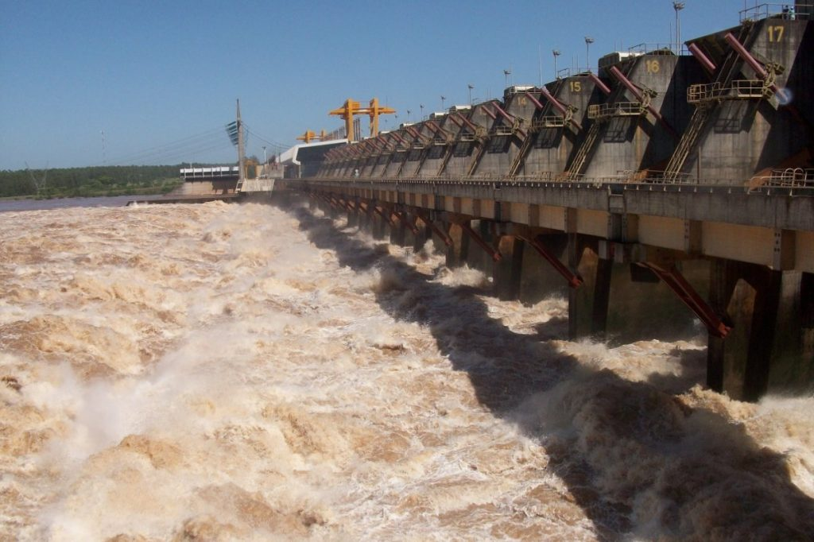
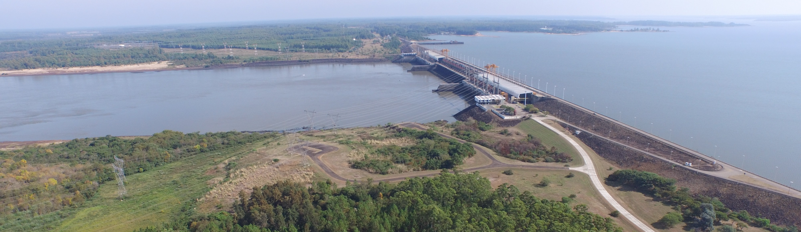
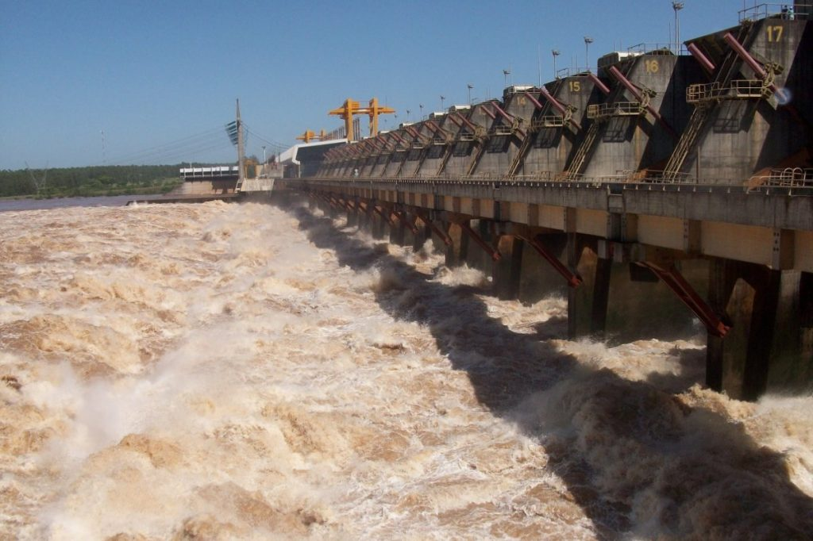
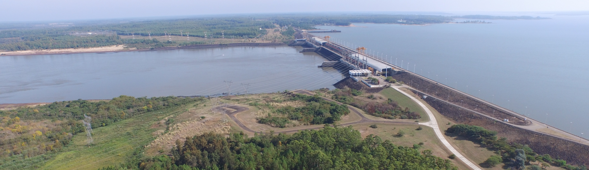

Mediateca
Esta es la página con material fotográfico y fílmico sobre las principales obras de la compañía. Con la botonera puede pasar de un proyecto a otro y cliqueando en las fotos puede habilitar un zoom con descripción. En dispositivos móviles se recomienda ver la página en modo apaisado.
 


